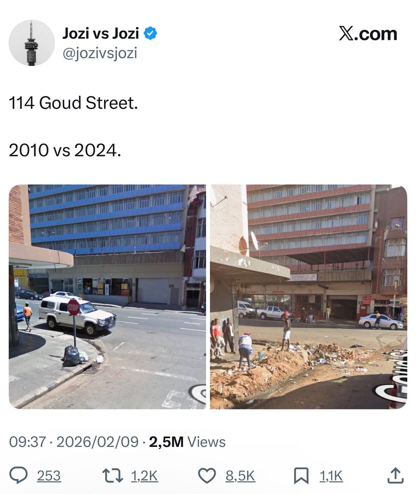

This South African is Making Thousands on X Just Posting Google Street View Screenshots
You don't need to code, teach English, or do data labelling to earn in dollars from South Africa. Sometimes all you need is Google Street View and a posting schedule.
A verified X (formerly Twitter) account called @jozivsjozi has built a massive following doing something remarkably simple: posting side-by-side screenshots of Johannesburg streets. One from around 2010, one from 2024.
No commentary. No video editing. No fancy tools. Just two images, a street address, and a posting schedule.
A recent post showing 114 Goud Street pulled 2.5 million views, 8,500 likes, and 1,200 reposts. Under X's creator revenue-sharing programme, those numbers translate directly into real income. Paid in USD.

How Much Can You Actually Earn?
X pays verified creators a share of ad revenue generated from replies to their posts. The exact CPM (cost per thousand impressions) varies, but creators consistently report earning between R50–R90 per 1,000 impressions (roughly $3–$5 USD) for accounts with engaged audiences.
Here's what the numbers look like for @jozivsjozi's viral post:
💰 Earnings Breakdown
Bottom line: A single viral post could earn more than most South Africans make in a month. And @jozivsjozi posts regularly. Multiple posts hitting hundreds of thousands of views each month = consistent five-figure income. From screenshots.
For South Africans looking for legitimate ways to earn online, this is one of the more creative approaches out there.
Why This Format Goes Viral in South Africa
The before-and-after format taps into something deeply emotional for South Africans. Urban decay in cities like Johannesburg, Durban, and Pretoria is a topic everyone has an opinion on.
Every post becomes a comment section battleground, and that engagement is exactly what the X algorithm rewards.
✅ Why It Works
South African Cities You Could Cover
@jozivsjozi has locked down Johannesburg. But SA has no shortage of cities with dramatic visual transformation.
🎯 Untapped Opportunities
The beachfront and CBD have changed enormously. Point Road, old Addington area, parts of the Berea are unrecognisable. Strong emotional connection for KZN residents.
Church Street, Sunnyside, CBD offer stark contrasts. Large, engaged online community ready to debate.
Different angle: gentrification in Woodstock, Sea Point transformation. Could show positive change or spark debate about who benefits.
Often overlooked. CBD has deteriorated visibly. Locals would engage heavily.
Smaller audiences but zero competition. Could own these niches entirely.
Klerksdorp, Welkom, Springs, Kempton Park. Residents starved for content about their areas and would share aggressively.
Step-by-Step: How to Start This Side Hustle
Pick your city
Choose one you know well or one with obvious visual change. Don't compete with @jozivsjozi on Joburg. Find your own niche.
Research on Google Street View
Open Google Maps, drop into Street View, and use the time slider (the small clock icon) to compare historical imagery. Most SA cities have coverage going back to 2009–2011.
Screenshot both eras
Keep it clean. Same angle, same framing. No filters or text overlays. The raw comparison is more powerful.
Create your X account and brand it
Something simple and memorable. "[City] Then vs Now" or a play on the city name. Add a clear bio and profile image.
Subscribe to X Premium
Costs R140/month. Required to qualify for revenue sharing. You'll also need 500+ followers and 5 million organic impressions in 3 months.
Post consistently
Daily is ideal. Schedule for peak SA times: 7–9am, 12–1pm, and 7–9pm.
Keep captions minimal
Just the street address and years. Let the images do the talking. Don't editorialize. Let the comments section debate for you.
Engage with replies
More replies = more ad revenue. Respond to comments, ask questions, encourage discussion.
The Catch: Getting to the Threshold
⚠️ Reality check: The biggest hurdle is reaching 5 million impressions in 3 months to qualify for X's revenue-sharing programme.
That's roughly 55,000 impressions per day on average. Achievable, but not easy. You'll need a few viral or semi-viral posts to get there.
🚀 How to Accelerate Growth
Timeline: Realistically, expect 1–3 months of consistent posting before you hit the threshold and start earning.
How This Compares to Other Online Income
For South Africans exploring ways to earn money online from home, this side hustle sits in an interesting space. It requires almost no upfront skill or investment, but the income is unpredictable and depends entirely on going viral.
Compare that to more stable remote work options like freelancing, customer support, data labelling, or teaching. Where the income is lower per hour but more consistent.
Most South Africans earning online use a mix of approaches: a stable remote work platform for baseline income, combined with higher-upside plays like content creation.
If you're just getting started with online income in South Africa, it's worth exploring verified platforms that actually pay SA workers while you build up your X presence on the side.
Looking for More Reliable Income?
While X revenue sharing can be lucrative, it takes time to build. Check out our directory of 59+ platforms that pay South Africans. Many accept complete beginners.
Browse Platforms